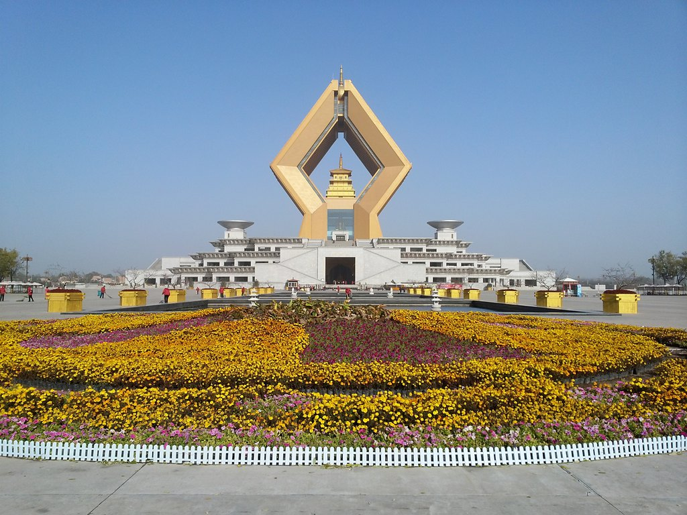
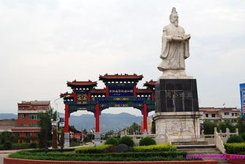

一，太白山
太白山横卧在宝鸡眉县、太白和西安周至3县境内。因山顶终年积雪，银光四射，故称太白。 它是横贯陕西省的秦岭山脉的主峰，海拔3767米，也是秦岭的最高峰。 太白山以森林景观为主体， 苍山奇峰、清溪碧潭、文物古迹点缀其间，层层山峰高耸入云，潺潺溪流之间怪石嶙峋， 构成了一幅生动画卷。太白山以其高、寒、险、奇、秀和神秘的特点闻名于世， 即使在盛夏时节山顶也终年积雪。“太白积雪六月天”是著名的关中八景之一。 太白山内，从北坡到南坡，可概括为“红河丹崖、斜峪雄关、古枫幽境、桃川曲流、 斗母奇峰、平安云海、太白明珠、拔仙绝顶”八景，八景之中以“太白明珠”最为引人入胜， “明珠”实为大爷海、二爷海、三爷海等湖泊。湖水清澈、平静，犹如颗颗洁白明珠镶嵌于太白山间。 湖水周边亦是雾锁山谷，转瞬间雾气弥散，人影不见，别具兴味。 自古太白山就为历代帝王重视， 文人墨客的足迹更是遍布山山岭岭。李白、杜甫、柳宗元、苏轼等都曾游过此， 留下大量赞美太白山景色的诗篇。“太白泼墨山”便传说为李白作诗之处； 唐代著名医药学家“药王”孙思邈亦在此留有捣药的碓窝。
二，法门寺
法门寺（Famen Temple），又名“真身宝塔”，位于炎帝故里、青铜器之乡——宝鸡市， 2004年被联合国教科文组织评为“世界第九大奇迹”，[1]全国重点文物保护单位。 据传始建于东汉明帝十一年（公元68年），约有1700多年历史，素有“关中塔庙始祖”之称， 周魏以前称作“阿育王寺”，隋文帝时改称“成实道场”，唐高祖时改名“法门寺”。 法门寺被誉为皇家寺庙，因安置释迦牟尼佛指骨舍利而成为举国仰望的佛教圣地。 法门寺佛塔被誉为“护国真身宝塔”。寺庙所在的法门寺文化景区为国家AAAAA级旅游景区。
法门寺地宫是迄今所见最大的塔下地宫。宝鸡法门寺地宫其出土了释迦牟尼佛指骨舍利、 铜浮屠、八重宝函、银花双轮十二环锡杖等佛教至高宝物，法门寺珍宝馆拥有出土于法门寺 地宫的两千多件大唐国宝重器，为世界寺庙之最。[2] 2014年10月16日，第27届世界佛教徒联谊会在宝鸡法门寺举行 。2018中国西北旅游营销大会暨旅游装备展上，入围“神奇西北100景”榜单。
三，周公庙
陕西省重点文物保护单位、省级风景名胜区---周公庙，位于陕西省岐山县城西北6.5公里的凤凰山南麓， 面积约62万平方米。此处依山傍水、古木参天、风景秀丽，东、西、北三面环山，唯南边与平地相接，状如簸箕。 《诗经》中描述此地为“有卷者阿，飘风自南”。因此，后世人称这里为“古卷阿”。
“岐邑多胜迹”，此话一点不假。如果你到“人文荟萃，史迹昭然”的周公庙旅游览胜， 就会对此话有更深刻的体会。周公庙门前古柏参天，院内绿荫蔽日，花草遍地，清泉如镜。 庙区殿宇众多，主要有周三公（周公、召公、姜太公）殿，以及委婉、后稷殿，并有亭榭楼阁等。 其建筑艺术具有浓郁的民族传统风格。 进入庙门，花草盈展，殿宇雄伟。汉槐蔽日，唐柏参天，旷达而使人心醉。
苏轼《周公庙诗》有言：“吾今那复梦周公，尚喜秋来过故宫；翠凤旧依山突兀，清泉长与世穷通。” 心中别有一番滋味。周公庙自然风光绚丽，文化遗迹灿烂，令人向往， 而周公的巍巍业绩和那博大的胸襟更使人敬仰。

四，宝鸡青铜器博物馆
宝鸡青铜器博物院（Baoji Bronze Ware Museum）为中国最大且是唯一的青铜器博物馆，地处“炎帝故里、 青铜器之乡，佛骨圣地、社火之乡”陕西省宝鸡市。全院由青铜之乡、周礼之邦、帝国之路、智慧之光等部分组成。 馆藏有何尊、折觥、厉王胡簋、墙盘、秦公镈、卫鼎等一千多件青铜器。宝鸡青铜器博物馆筹建于1990年 ，1998年9月8日建成对外开放。2010年9月28日新馆落成，并更改名为宝鸡青铜器博物院。 位于中华石鼓园内。是截至2013年中国最大的青铜器博物院，也是全国唯一的以青铜器命名的专题博物馆。 主体建筑面积10000平方米，为风格独特的“平台五鼎”造型，气势雄伟，新颖别致，浓缩了西周列鼎制度的深刻内涵。 被列为中国青铜器收藏史上的一个里程碑，是西部重镇宝鸡的标志性建筑。
宝鸡青铜器博物院主陈列“周秦文明之光”，分为西周王朝在宝鸡发祥和秦国从宝鸡崛起、 “盛世吉金--中国21世纪考古新发现特别展”、“岐山董家村西周窖藏专题展”等部分， 荟萃了宝鸡地区考古发现的青铜器、玉器、陶器、金器等精品600余件（组），展示了周族兴起 、古公迁岐、武王灭周、分封诸侯、周公礼制、秦君游猎、穆公称霸等一系列重大史实， 生动的再现了周秦王朝的各个历史侧面，使人们认识到青铜文化魂之所在， 看到周秦文明对华夏五千年所做的巨大贡献，堪称为一部不朽的青铜史书。